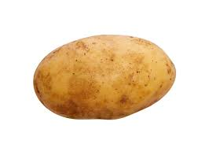

Psianka ziemniak, ziemniak (Solanum tuberosum L.) gatunek rośliny należący do rodziny psiankowatych. Nazwa „ziemniak” odnosi się zarówno do całej rośliny, jak i do jej jadalnych, bogatych w skrobię bulw pędowych, z powodu których ten gatunek uprawia się na skalę masową. Roślina wywodzi się z Ameryki Południowej, gdzie zaczęto ją uprawiać już tysiące lat temu. Ziemniak został przywieziony do Europy w końcu XVI wieku, a w ciągu następnych stuleci stał się jednym z podstawowych składników jadłospisu na całym świecie. W 2009 był czwartą pod względem wielkości produkcji rośliną uprawną (po kukurydzy, ryżu i pszenicy).
